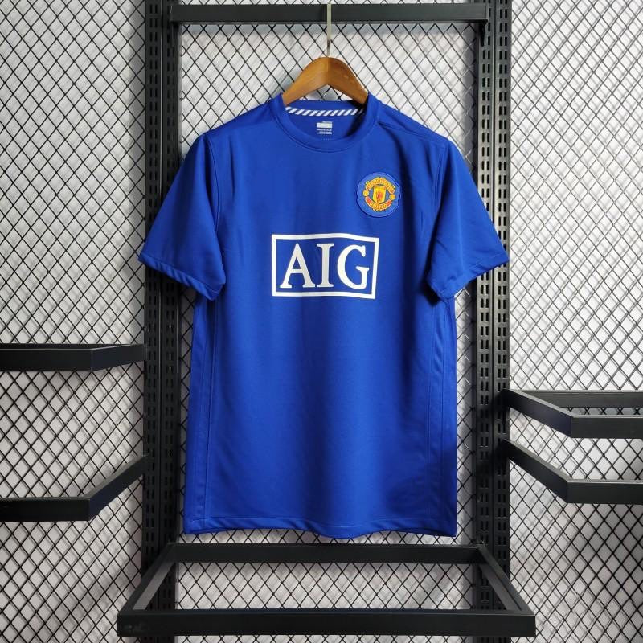
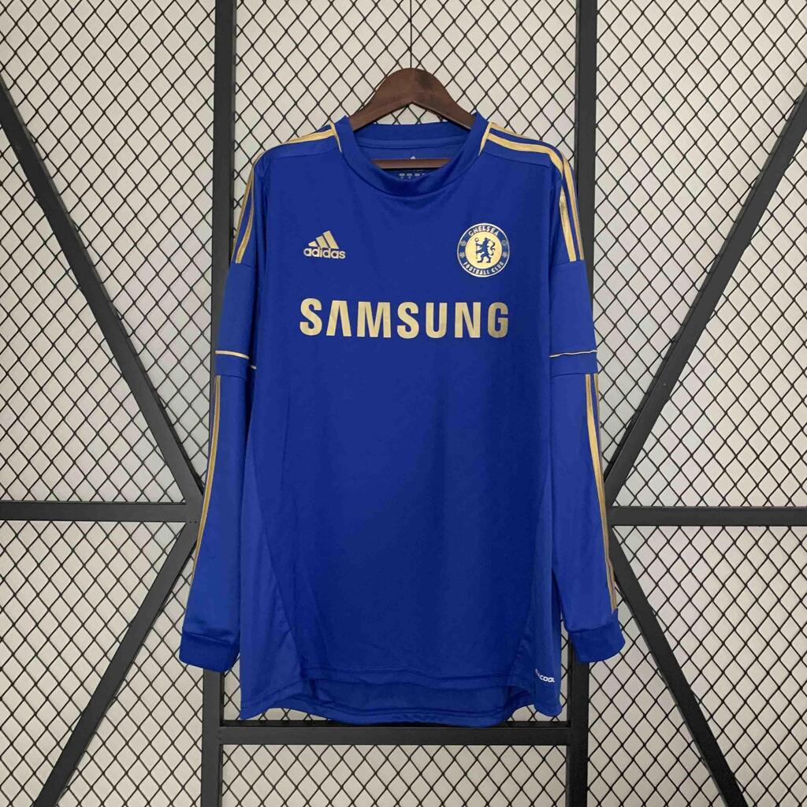
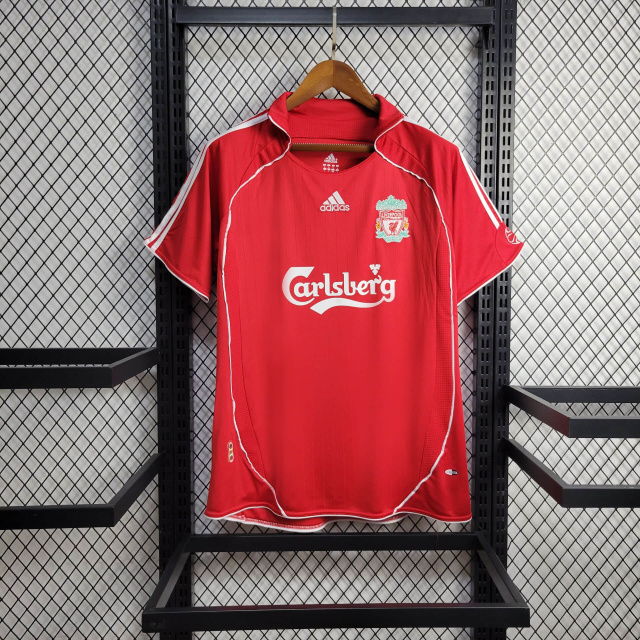
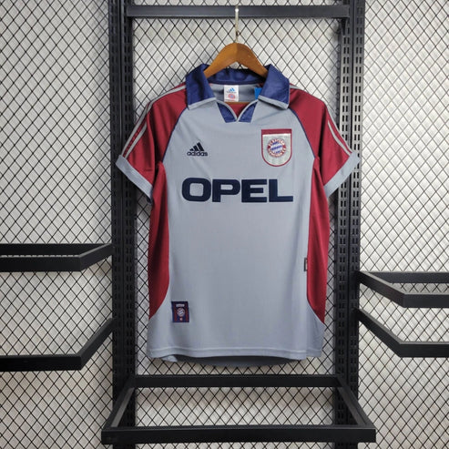
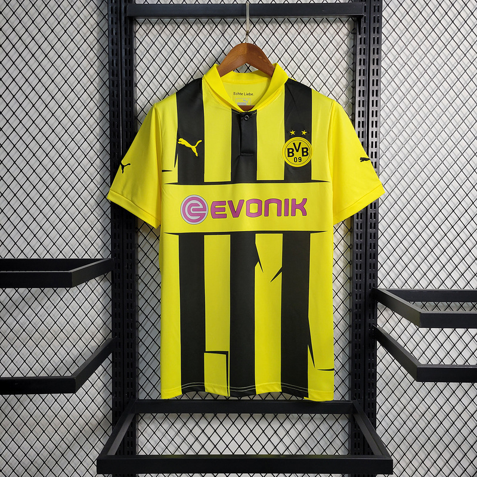

Las camisetas más icónicas del fútbol español.
| |
|
|
| Real Madrid | Barça | Atlético Madrid |
| 1994-1996 | 1998-1999 | 2004-2005 |
Las camisetas más bonitas de Reino Unido.
|  |
 |
 |
| Manchester United | Chelsea | Liverpool |
| 2008-2009 | 2012-2013 | 2006-2007 |
Las camisetas alemanas más históricas del mundo.
|  |
 |
 |
| Bayern Múnich | Borussia Dortmund | Bayern Múnich |
| 1998-1999 | 2012-2013 | 1993-1995 |
Nuestra empresa de envíos:DHL
Haz tu segumiento de pedido aquí
Más camisetas en:Dayfutboles
Nuesrto inventario aquí